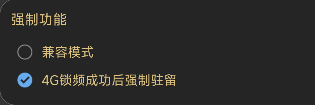

常见问题（Q&A）
一、设备要求
1、系统至少在Android
6.0以上。
2、锁频、锁网、信令及更多的物理层参数需要高通芯片且ROOT，或者海思芯片加上HiAgent服务后才能正常输出。
3、其他芯片可以使用测试功能，不影响配置测试计划和任务执行功能，文件格式可以选择CSV。
4、锁NSA的需要在锁频的界面勾选锁NSA选项。
5、锁LTE频段的时候，锁定后回落到2G，这时候可以重新勾选锁网的 “4G” 按钮，强制进入4G模式。
2、锁频、锁网、信令及更多的物理层参数需要高通芯片且ROOT，或者海思芯片加上HiAgent服务后才能正常输出。
3、其他芯片可以使用测试功能，不影响配置测试计划和任务执行功能，文件格式可以选择CSV。
4、锁NSA的需要在锁频的界面勾选锁NSA选项。
5、锁LTE频段的时候，锁定后回落到2G，这时候可以重新勾选锁网的 “4G” 按钮，强制进入4G模式。
二、支持哪些网络锁定
GSM：锁频段；
WCDMA：锁频段、频点；
LTE：锁频段、PCI、频点；
NR：锁频段、PCI、频点。
三、如何知道目前设备支持哪些LTE，NR频段
在“设备”页面可以看到支持的列表，勾选后选择右边的锁。


四、列表显示正在加载或者设备无法获取到授权怎么办
如果是高通芯片确认ROOT及获取面具授权。华为设备请确认是否有HiAgent服务，如果都已经满足可能是新手机需要适配。
五、不知道锁哪些频段怎么办
LTE举例，首先在设备页面找到支持的LTE频段列表，然后分别进行尝试。如果列表为空可自行百度当前的运营商支持哪些频段。
然后在频段列表里面勾选。不要一次勾选多个，需要一个个的尝试。锁网频段成功后，可以在LTE页面里面看到对应的频点，
记住这些频点后期如果发现那个频点好，可以直接在锁频点哪里输入频点号，比如375等。频点最多可以一次输入2个。
六、普通会员权益
普通会员可以使用锁网，锁频功能（海思芯片5G除外）。
七、高级会员权益
高级会员能无限制使用软件的全部功能
-
室内室外测试，测试计划配置。LOG记录,KPI统计。内存回放（信令、事件、参数同步）。工参导入及基站连线，查询。批量信令导出（支持csv，pcap）。单条信令查看，导出。信令，事件双卡分离。地图轨迹不限时间导出（支持csv，kml）。
八、锁频功能无效怎么办
部分手机由于驱动或者权限问题导致无法正常使用，可以在设置->强制功能里面尝试如下方法
部分手机由于驱动或者权限问题导致无法正常使用，可以在设置->强制功能里面尝试如下方法
-
选择兼容模式。

九、室外地图轨迹不连续怎么办
出于省电的考虑，Android目前限制背景应用使用定位请求。如果在路测中有这样的需求，保持屏幕常量，APP处于前端
如果是需要后台持续定位，请联系作者。
十、文件存储路径
根目录:
1. /CellularPro (Android 10 及以下设备).
2. /Android/data/make.more.r2d2.celluar_pro（Android11之后）
- CellularPro
- logs --> including dlf/csv/xls/cu/l5g files
- export
- cache --> auto cache csv files
- indoor --> csv and kmz files
- outdoor --> csv and kml files
- signaling --> csv and pcap files